🏡 La vostra casa
🚪 L'ingresso

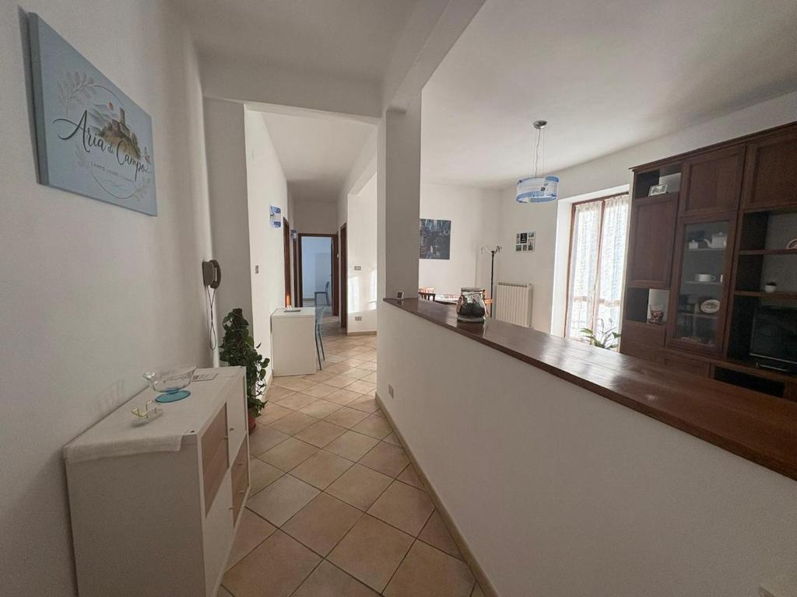
Ogni viaggio inizia da un ingresso, ma il nostro vuole farvi sentire subito a casa. Appena varcata la soglia di Aria di Campo, vi accoglierà un ambiente luminoso e curato, dove ogni dettaglio è stato pensato per regalarvi un soggiorno piacevole e rilassante.
🛋️ Il soggiorno

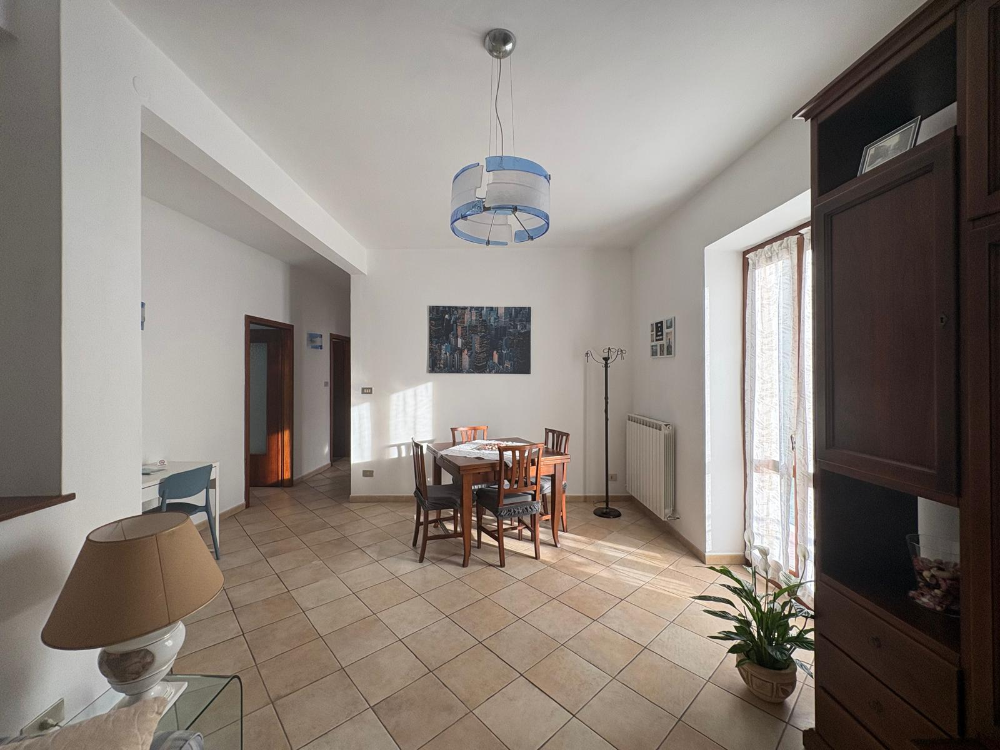
Il soggiorno è il cuore di Aria di Campo. Uno spazio accogliente dove rilassarsi sul comodo divano letto, guardare un film, leggere un libro o condividere un pranzo e una cena insieme. La luce naturale e l'accesso al balcone rendono questo ambiente ancora più piacevole.
🍽️ La cucina

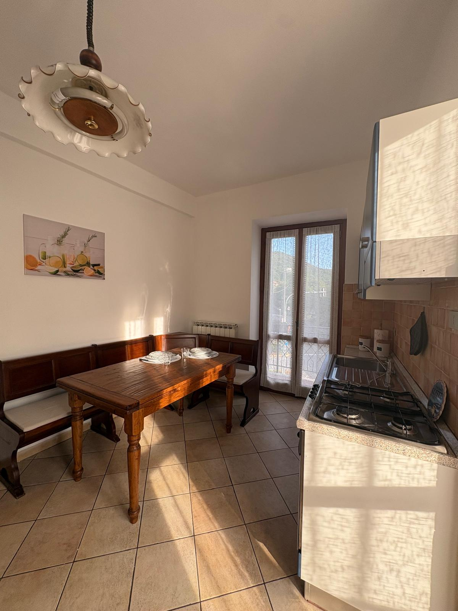
La cucina è completamente attrezzata per farvi sentire liberi di vivere la vacanza secondo i vostri ritmi. Dal caffè del mattino alla cena in compagnia, troverete tutto il necessario per sentirvi come a casa.
E quando il tempo lo permette, il balcone con tavolino e sedie diventa il luogo ideale per una colazione all'aria aperta o un aperitivo al tramonto.
🛏️ La camera padronale
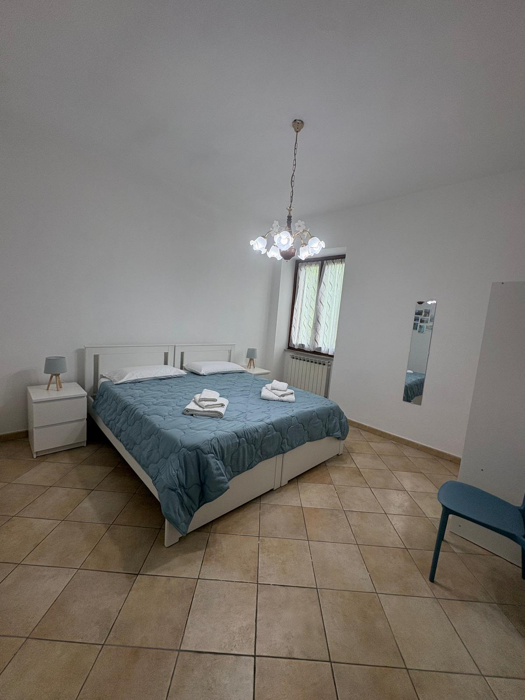
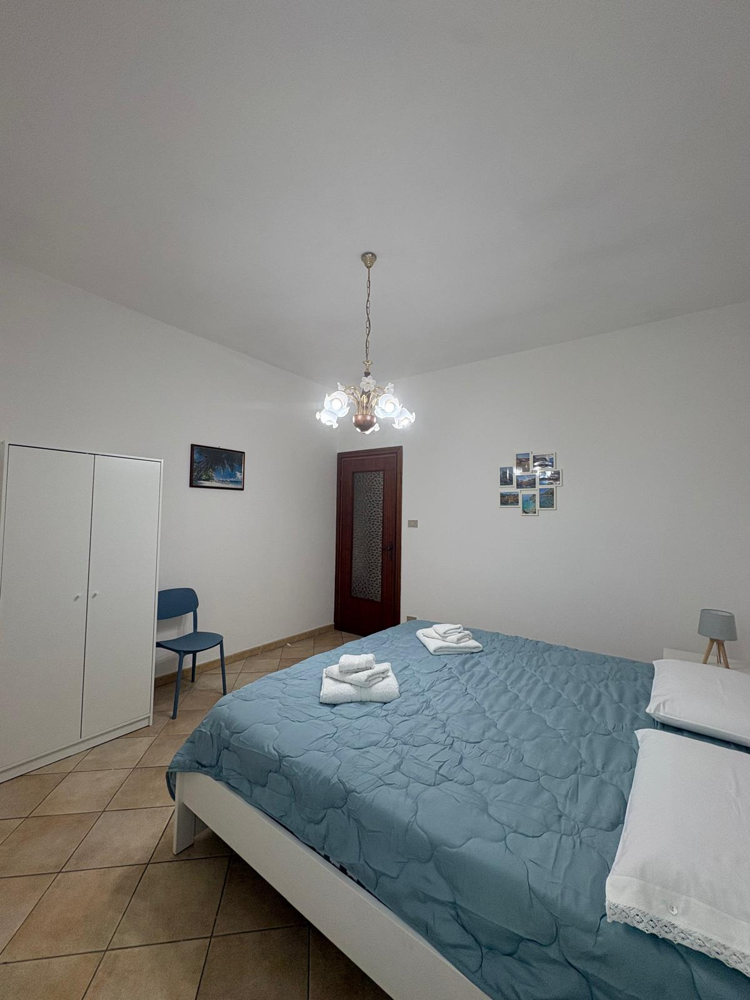
Dopo una giornata tra i vicoli di Campo Ligure, non c'è niente di meglio che concedersi un riposo rigenerante. La camera padronale, con il suo spazioso letto, è pensata per offrirvi comfort, tranquillità e un risveglio piacevole grazie alla luce naturale che entra dalla finestra.
🛏️ La seconda camera

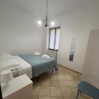
Accogliente, luminosa e confortevole. La seconda camera, con letto matrimoniale alla francese, è perfetta per una coppia o per chi desidera uno spazio intimo dove rilassarsi.
🚿 Il bagno

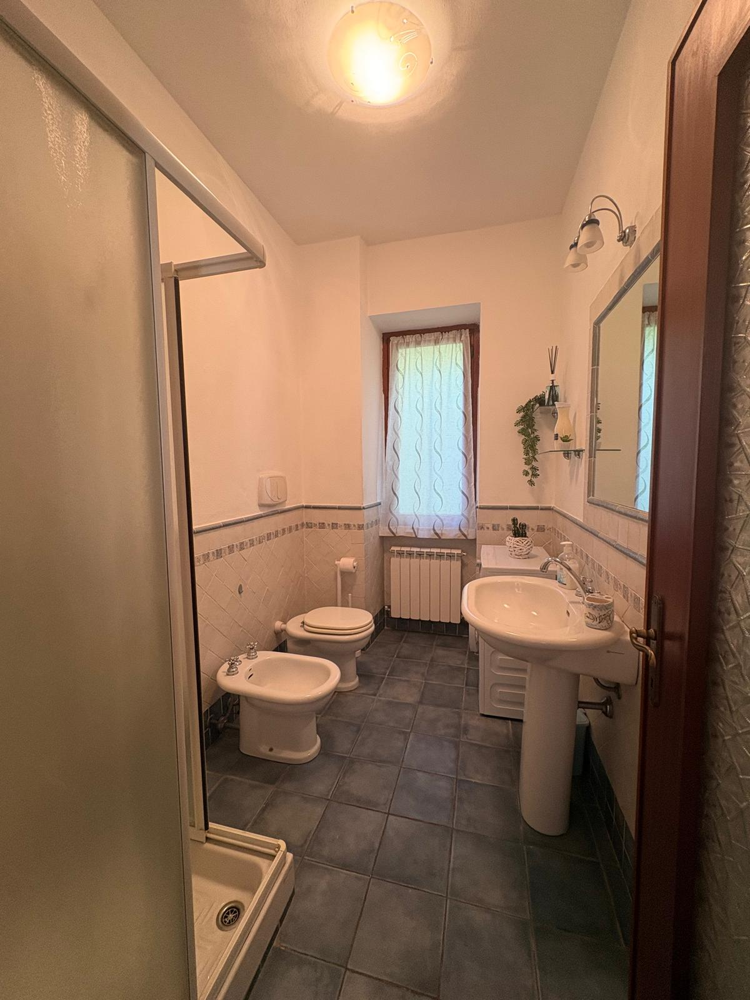
Comfort e praticità fanno parte dell'esperienza. Il bagno è dotato di doccia, lavabo, WC, bidet e lavatrice, per offrirvi tutta la comodità di cui avete bisogno, sia per un weekend che per un soggiorno più lungo.
🌿 Il balcone

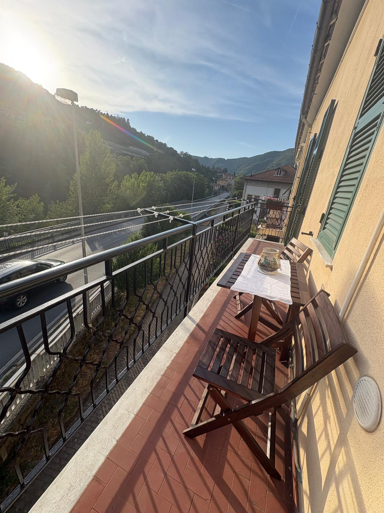
C'è un momento della giornata che amiamo particolarmente: quello in cui ci si siede sul balcone con un caffè, un buon libro o un calice di vino. Da qui potrete respirare l'aria di Campo Ligure, rallentare i ritmi e godervi la tranquillità che rende speciale questo borgo.
🔑 Check-in & Check-out
🕐 Check-in
Benvenuti ad Aria di Campo!
Per rendere il vostro arrivo il più semplice e piacevole possibile, qui trovate tutte le informazioni necessarie per accedere alla casa e iniziare il vostro soggiorno senza pensieri.
dalle 13:00 alle 19:00
Se possibile, vi chiediamo gentilmente di comunicare un orario indicativo del vostro arrivo.
🔑 Accesso alla casa
Quando arrivate, suonate all'interno 1 oppure telefonate al 352 041 1284.
🕐 Check-out
È arrivato il momento di salutarci, ma prima di partire vi chiediamo di seguire alcune semplici indicazioni per lasciare la casa pronta per i prossimi ospiti.
entro le 10:00
Grazie per aver scelto Aria di Campo. ❤️
Speriamo che il vostro soggiorno a Campo Ligure sia stato piacevole e che possiate portare con voi un bel ricordo del nostro borgo.
🚗 Il Garage e Parcheggi pubblici
🚗 Garage privato
Per rendere il vostro soggiorno ancora più comodo, Aria di Campo dispone di un garage privato situato proprio sotto l’appartamento, all’interno dello stesso stabile.
🔒 Sicurezza
Il garage è dotato di videosorveglianza.
💳 Pagamento
Il pagamento del garage deve essere effettuato il primo giorno del soggiorno. È possibile effettuare il pagamento anche tramite bancomat.
🚪 Apertura della serranda
La serranda del garage si apre tramite il pulsante situato all’interno del garage.
È sufficiente premere una sola volta, senza tenere il pulsante premuto, sia per aprire che per chiudere.
Una volta azionato il pulsante, non passate sotto la serranda durante la chiusura. La serranda è dotata di fotocellule; attendete che sia completamente aperta prima di passare.
🅿️ Parcheggio pubblico gratuito
Se preferite utilizzare il parcheggio pubblico, ne troverete uno a circa 250 metri da Aria di Campo.
Come raggiungerlo:
In fondo alla via girate a destra, prendete la prima uscita e subito sulla destra
troverete il parcheggio.
⬆️ Piano superiore
🅿️ Gratuito e libero, senza disco orario.
⬇️ Piano strada
🕐 Parcheggio a tempo, con disco orario obbligatorio.
📋 Regole della casa
È vietato fumare all’interno dell’appartamento.
Per il benessere di tutti gli ospiti e del vicinato, vi chiediamo di evitare rumori eccessivi e di rispettare il silenzio dalle ore 23:00 alle ore 8:00.
Non sono consentite feste, eventi o riunioni non autorizzate.
Mantenete gli ambienti puliti e ordinati.
Prima della partenza, lasciate la cucina pulita e le stoviglie lavate.
Vi chiediamo di utilizzare il bidone della spazzatura per conferire correttamente i rifiuti.
Assicuratevi di chiudere sempre bene tutti i rubinetti dopo l’utilizzo.
Vi chiediamo gentilmente di non lasciare asciugamani o tappetini all’interno del piatto doccia, così da mantenere il bagno asciutto e in perfette condizioni.
Quando uscite dall’appartamento, spegnete tutte le luci e gli apparecchi elettrici non necessari.
Chiudete sempre la porta d’ingresso e le finestre quando lasciate l’alloggio e segnalate tempestivamente eventuali guasti o inconvenienti.
Gli animali sono ammessi esclusivamente se autorizzati al momento della prenotazione.
Grazie per la vostra collaborazione e vi auguriamo una splendida permanenza! ❤️
📍 Scopri il territorio
Campo Ligure e i suoi dintorni offrono tante possibilità per scoprire il fascino dell'entroterra ligure, tra natura, storia e tradizioni.
🏘️ Il borgo
Passeggiate tra i vicoli del centro storico e scoprite le atmosfere autentiche di Campo Ligure.
🏰 Storia e cultura
Scoprite il patrimonio storico e culturale del paese.
🌳 Natura
I dintorni di Campo Ligure sono ideali per passeggiate, escursioni e momenti immersi nella natura.
🍴 Dove mangiare
A Campo Ligure e nei dintorni troverete diverse possibilità per gustare la cucina locale, mangiare una buona pizza o semplicemente fermarvi per una colazione, un caffè o una pausa.
🍝 Ristoranti
🍕 Pizzerie
Charles Pizza
📞 010 472 0443
📍 Piazzale Guglielmo Marconi, 2/3/4 – Campo Ligure
🗺️ Apri in Google Maps →FREGUGGE PIZZA E CUCINA
📞 010 920 179
📍 Piazza Martiri della Benedicta, 2 – Campo Ligure
🗺️ Apri in Google Maps →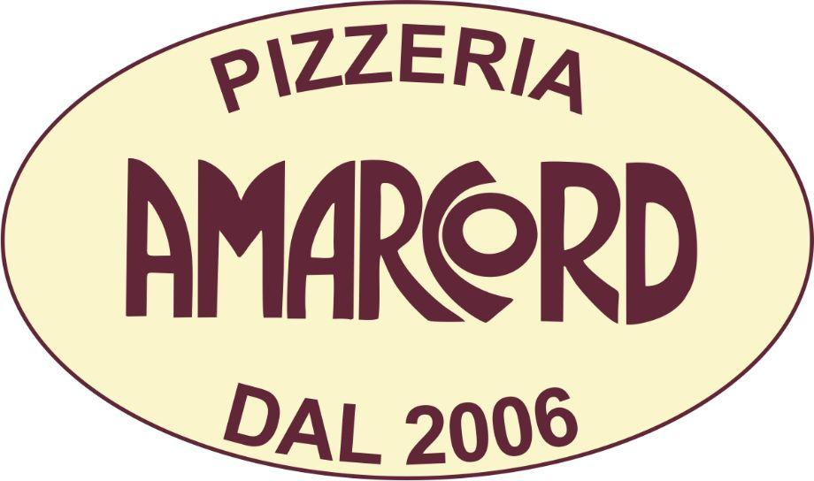
Amarcord — Masone
📞 346 849 1804
📍 Via General Cantore, 7 – Masone
🗺️ Apri in Google Maps →☕ Bar
Bar Moderno Di Negretto Giorgia & C. Snc
📞 010 920 849
📍 Piazza Vittorio Emanuele, 1 – Campo Ligure
🗺️ Apri in Google Maps →Bar Simoni da Giulia
📞 010 860 3592
📍 Piazza Martiri della Benedicta, 7 – Campo Ligure
🗺️ Apri in Google Maps →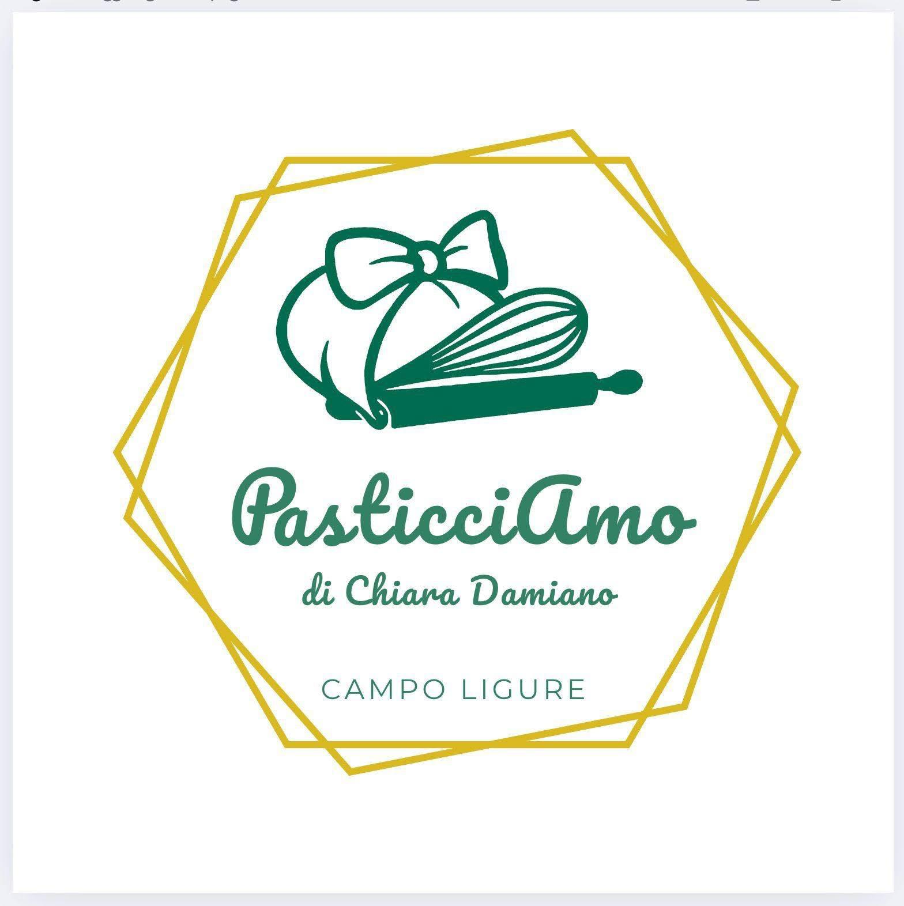
Pasticceria Pasticci'Amo
📞 351 625 8373
📍 Via Don Minzoni, 44 – Campo Ligure
🗺️ Apri in Google Maps →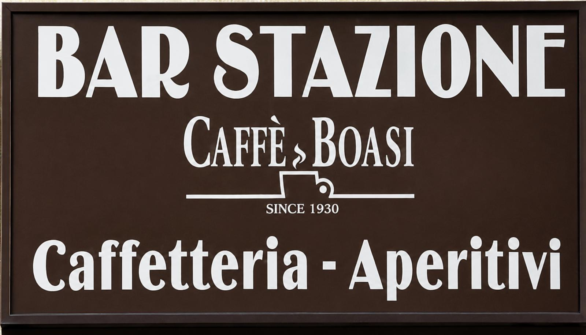
Bar Stazione
📞 010 921 030
📍 Piazzale Guglielmo Marconi, 27 – Campo Ligure
🗺️ Apri in Google Maps →🚗 Come muoversi
Da Aria di Campo potete raggiungere facilmente il centro di Campo Ligure e spostarvi nei dintorni sia in auto che con i mezzi pubblici.
🚶 A piedi
Il centro storico di Campo Ligure è raccolto e piacevole da visitare a piedi. Dall’appartamento potrete raggiungere comodamente negozi, bar, ristoranti e i principali punti di interesse del borgo.
🚆 In treno
La stazione ferroviaria di Campo Ligure-Masone si trova a circa 450 metri da Aria di Campo, quindi è facilmente raggiungibile anche a piedi. La linea ferroviaria permette di raggiungere comodamente Genova e Acqui Terme, oltre ad altre località lungo il percorso.
🚆 Genova — circa 40 minuti
🚆 Acqui Terme — circa 35 minuti
Gli orari dei treni possono variare: vi consigliamo di verificarli prima della partenza.
🚌 In autobus
Campo Ligure è collegato anche con i paesi della zona tramite il servizio di trasporto pubblico. È possibile raggiungere Genova e diverse località dei dintorni senza utilizzare l’auto.
🚗 In auto
Se arrivate in auto, avete la possibilità di utilizzare il garage privato di Aria di Campo oppure il parcheggio pubblico gratuito. Per tutte le informazioni su costo, pagamento, apertura della serranda e parcheggio pubblico, potete consultare direttamente la sezione dedicata:
🌊 Verso il mare
La posizione di Campo Ligure permette di raggiungere facilmente la Riviera del Ponente Ligure, con tante località dove trascorrere una giornata al mare, passeggiare sul lungomare o scoprire i caratteristici borghi della costa.
Tra le località più conosciute:
🌊 Arenzano
🌊 Cogoleto
🌊 Varazze
🌊 Celle Ligure
🌊 Albisola
🌊 Savona
🌊 Finale Ligure
🌊 Noli
🌊 Spotorno
🌊 Bergeggi
🌊 Albenga
🌊 Alassio
Dalle spiagge alle passeggiate sul mare, fino ai piccoli borghi e alle località più vivaci, la Riviera del Ponente offre tantissime possibilità per una giornata fuori porta. ☀️🌊
🏙️ Genova
A circa 35 km da Campo Ligure, Genova è facilmente raggiungibile sia in auto sia con i mezzi pubblici. Una buona scelta per una giornata alla scoperta di centro storico, Porto Antico, Acquario e principali attrazioni della città.
🌿 Natura e dintorni
Se invece preferite natura e tranquillità, nei dintorni trovate diverse località interessanti per passeggiate, escursioni e gite fuori porta.
🌲 Sassello — natura, passeggiate e prodotti tipici
🏘️ Ovada — centro storico, enogastronomia e territorio del Monferrato
♨️ Acqui Terme — terme, centro storico e relax
🇮🇹 Liguria o Piemonte?
Una delle cose belle di soggiornare ad Aria di Campo è proprio la posizione: in poco tempo potete passare dall’entroterra ligure al mare oppure raggiungere il Piemonte. Che abbiate voglia di una giornata al mare, di visitare una città, di fare una passeggiata nella natura o semplicemente scoprire piccoli borghi, Campo Ligure può essere un ottimo punto di partenza. ❤️
🧭 Informazioni e servizi utili
🛒 Supermercati / Negozi alimentari
📍 Piazzale Guglielmo Marconi, 3/5 – 16013 Campo Ligure GE
🗺️ Apri in Google Maps →📍 Via Don Minzoni, 57 – 16013 Campo Ligure GE
🗺️ Apri in Google Maps →📍 Via Don Minzoni, 21 – 16013 Campo Ligure GE
🗺️ Apri in Google Maps →📍 Via Saracco, 43 – 16013 Campo Ligure GE
🗺️ Apri in Google Maps →📍 Piazza Vittorio Emanuele II – 16013 Campo Ligure GE
🗺️ Apri in Google Maps →📍 Via Don Minzoni, 15 – 16013 Campo Ligure GE
🗺️ Apri in Google Maps →📍 Via Angelo Serafino Rossi – 16013 Campo Ligure GE
🗺️ Apri in Google Maps →📍 Via Saracco, 10 – 16013 Campo Ligure GE
🗺️ Apri in Google Maps →🥖 Panifici / Pasticcerie
📍 Via Matteo Olivieri, 52 – 16013 Campo Ligure GE
🗺️ Apri in Google Maps →📍 Via Convento, 3 – 16013 Campo Ligure GE
🗺️ Apri in Google Maps →📍 Via Giuseppe Saracco, 11 – 16013 Campo Ligure GE
🗺️ Apri in Google Maps →🚬 Tabaccheria
📍 Via Saracco, 13 – 16013 Campo Ligure GE
🗺️ Apri in Google Maps →🧺 Lavanderia / Sartoria
📍 Via Don Minzoni, 28 – 16013 Campo Ligure GE
🗺️ Apri in Google Maps →⛽ Area di servizio
📍 Via Isola Giugno, 79 – 16013 Campo Ligure GE
🗺️ Apri in Google Maps →💍 Filigrana
📍 Via Angelo Serafino Rossi, 15 – 16013 Campo Ligure GE
🗺️ Apri in Google Maps →🏥 Salute e assistenza
💊 Farmacie
📍 Vico Del Gelsomino, 1 – 16013 Campo Ligure GE
📞 010 921020
🗺️ Apri in Google Maps →📍 Via Marconi, 12 – 16010 Masone GE
📞 010 926007
🗺️ Apri in Google Maps →📍 Via Roma, 14 – 16010 Rossiglione GE
📞 010 925000
🗺️ Apri in Google Maps →🏥 Casa di Comunità
📍 Via Angelo Serafino Rossi, 33 – 16013 Campo Ligure GE
📞 010 849 7842
🗺️ Apri in Google Maps →🩺 Guardia Medica – Continuità Assistenziale
📞 800 893 580
🚑 Croce Rossa Italiana – Comitato di Campo Ligure
🚨 NUE – Numero Unico di Emergenza
📞 112
In caso di emergenza, chiamate il 112.